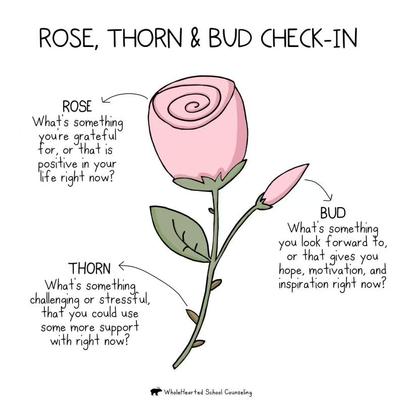
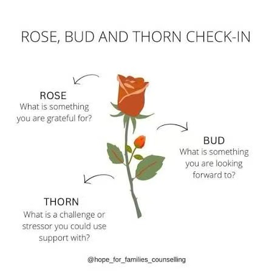

玫瑰 · Rose
在社区的这一周，一件让你感到幸福或感恩的事情是什么？
灵感来自经典的 Rose, Bud, Thorn 破冰游戏。三种花，三个问题，让每个人都能在安静的夜晚安全地表达情绪。
在社区的这一周，一件让你感到幸福或感恩的事情是什么？
现在有什么让你感到焦虑或者需要帮助的事情吗？
你现在有什么期待的事情吗？这周有什么新灵感想要实现呢？


点开可放大扫码 / 链接 / 小程序进入后，第一屏就是这段规则介绍。
各色玫瑰在同一片月光下安静生长。这里没有点赞数，也没有排行榜。